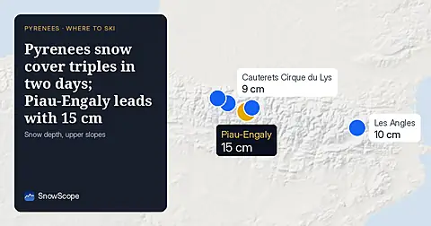
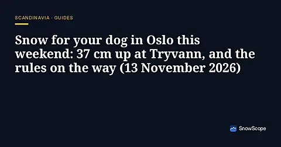
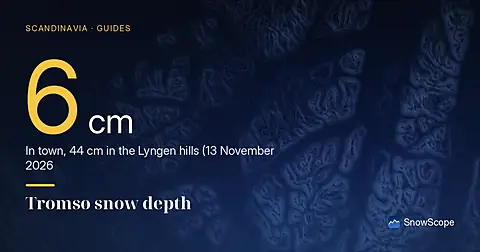
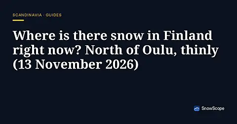
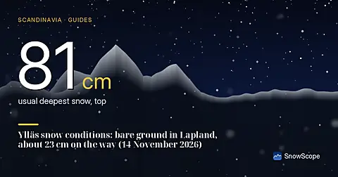
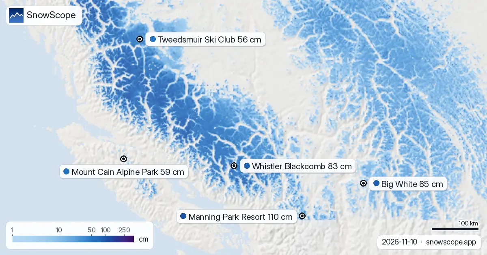
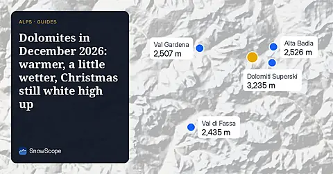

Snow reports · Snow depth
Daily snow reports for skiers: where the snow is, what is coming and where to ski, from the SnowScope snow map and measuring stations. Every number comes from that day's data.

Snow-covered area jumped from 560 to 1,710 km² between November 17 and 19. Piau-Engaly holds the deepest snow at 15 cm on upper slopes as of November 19.

Only 3 of 318 snow stations in Japan had snow on the ground this morning. Here is where it is, what melted this week, and where the next snow falls.

Mount Washington Alpine Resort snow report: 104 cm up top (Western Canada, 18 November). At 1,456 m on Whistler Blackcomb the season is late: our …

Crested Butte snow report: 38 in up top (US West, 18 November). This is a good start at Telluride. At 10,620 ft (3,237 m), our model has 22 in …


The early-winter snowpack in the Alps is building unevenly, and height makes all the difference. Today the deepest snow in the Alps is at La Grave …

Is there snow in the Atlas today? There is no snow on the Atlas ski slopes today. Snow is stored only on the highest summits: about 20 km² of ground, …

2 of 4: that is how many resorts in the US Northeast are clearly above normal today. How does this winter look so far? We set today's snow at 4 …

At Big White on 15 November, the upper slopes hold 68 cm near the summit while the base remains bare; an extreme vertical gradient typical of early season.

Himos snow in mid-November 2026: the weather stations around Jämsä measured 0 to 2 cm on 13 November; the first-snow cross-country loop opens on 14 November, the slope opening date is not set yet. Rain risk this week and 46 past winters.

Lofsdalen snow report for mid-November 2026: the Häggberget station at 682 m measured 6 cm on 12 November, valley stations 7 to 8 cm on 13 November; about 7 cm more forecast with no rain, opening 11 December, 46 past winters.

Narvikfjellet snow conditions in mid-November 2026: Norway's national snow map shows about 50 cm at 1110 m and 35 cm at 844 m but almost none by the fjord; the nearest Swedish station at Katterjåkk measured 9 cm. Week ahead and 46 past winters.

Røros dog sledding guide for winter 2026-27: about 5 to 6 cm of snow on Norway's national snow map, kennels listed by Destination Røros with prices, the Femundløpet sled-dog race in February 2027, and the rules for your own dog near tame reindeer.

Romme Alpin snow in mid-November 2026: Borlänge measured 4 cm, Ludvika 10 cm and Falun 0 cm on 13 November; rain this week; the season starts 19 December on made snow. What 46 past winters say about natural snow here.

Beitostølen snow conditions in mid-November 2026: about 10 to 13 cm across the whole area on Norway's national snow map, 10 cm more forecast this week with no rain, and how 46 past winters usually look at this high village.

Vuokatti snow conditions in mid-November 2026: the stations at Sotkamo measured 0 cm on 13 November, Kajaani 1 cm; about 9 cm is forecast this week but some of it as rain; slopes aim to open 4 December. 46 past winters.
Branäs snow conditions in mid-November 2026: the Kindsjön station at 425 m measured 27 cm on 13 November, Letafors 17 cm, Östmark in the valley 0 cm. Rain risk this week, opening 11 December, 46 past winters.

Norefjell snow depth in mid-November 2026: Norway's national snow map jumped from about 4-5 cm to 15-20 cm overnight, with about 45 cm on the high plateau. The week ahead, rain risk low down, and 46 past winters.

Tahko snow depth in mid-November 2026: the slope season opened on 13 November with 2 of 14 lifts, on made snow; the stations around measured 0 cm after a short 2 to 4 cm cover melted. The week ahead and 46 past winters.

Funäsdalsfjällen snow in mid-November 2026: the station at Ljusnedal measured 7 cm on 13 November, Tänndalen is open on a small area, Ramundberget opens 19 December. Week ahead and 46 past winters at both resorts.

Rovaniemi husky and dog guide for winter 2026-27: the weather stations measured 7 to 8 cm on 13 November, the city's first ski track opened, three husky farms listed by Visit Rovaniemi with dates and prices, daylight, and the rules for your own dog.

Myrkdalen snow depth in mid-November 2026: Norway's national snow map shows about 14 cm on the slopes and 33 cm at 1333 m; our forecast gives about 44 cm at the top in seven days. 46 past winters for late November.

Kiruna dog sledding guide for winter 2026-27: the weather station in Kiruna measured 0 cm of snow on 13 November, operators listed by Kiruna Lapland with season and prices, short days, and the rules for your own dog on ski tracks, in reindeer land and in Abisko National Park.

Saariselkä snow report for mid-November 2026: the weather station in Saariselkä measured 4 cm on 13 November, steady for a week; about 22 cm is forecast in seven days with no rain; slopes aim to open 21 November.

Riksgränsen and Björkliden snow report for mid-November 2026: the station at Katterjåkk measured 9 cm and Abisko 2 cm on 13 November, the week ahead, why the lifts open only in February, and 46 past winters.

Hafjell snow report for mid-November 2026: about 2 cm near the top and nothing at the bottom on Norway's national snow map, 9 cm forecast at the top this week with rain below, and how 46 past winters usually look in late November.

On 13 November 2026 the weather stations in Stockholm and Helsinki measured 0 cm of snow while Sälen had 45 cm and Umeå 20 cm. Height, the sea, the city and the track of the storms explain it, with numbers from 46 past winters.

Pyhä-Luosto snow depth in mid-November 2026: weather stations around the fells measured 0 to 9 cm on 13 November, below normal; about 23 cm is forecast this week with no rain. Opening plans and 46 past winters.

Vemdalen snow conditions in mid-November 2026: Swedish weather stations around Vemdalsskalet and Björnrike measured 6 to 12 cm on 13 November after a snowy two days, about 8 cm more this week, opening plans and 46 past winters.

Voss snow forecast for mid-November 2026: Norway's national snow map shows about 20 cm at 1348 m and almost nothing in town, our forecast gives about 35 cm on top of Voss Resort over seven days with rain below about 600 m, plus 46 past winters.

A practical guide to dog sledding around Tromsø in winter 2026-27: which husky farms the tourist board lists, when the snow season starts, what a ride costs, the polar night, and the rules for walking your own dog on snow and near reindeer.

Kläppen snow depth in mid-November 2026: the weather station in Sälen, 13 km away, measured 45 cm on 13 November after 11 cm the day before; the resort reports 25 cm. Rain risk this week, opening 11 December, 46 past winters.

Bergen dog owners, weekend of 14 November 2026: bare ground at Florida on Friday, 5 cm only up at Kvamskogen, and a very wet Sunday. Bergen's year-round leash rules, the four fenced dog yards, and the Fløyen trails.


Luleå on 13 November 2026: the Kallax airport station sent no snow depth today, but the stations around the city measured 3 to 7 cm, all new since Thursday, with more snow falling on Friday.

Dog owners in Oslo, 13 November 2026: 4 cm of snow at Blindern, 31 cm at Bjørnholt and 37 cm at Tryvannshøgda. Where dogs may run free, what the leash rules say in November, and a cold, dry Saturday.

Measured snow in Oulu on 13 November 2026: 7 cm at Kaukovainio, 5 cm on Hailuoto, 8 cm at Ruukki, all new since Thursday. A little more on the way before Monday's thaw.

Measured snow in Rovaniemi on 13 November 2026: 7 cm at the airport, 8 cm at Apukka. Close to, but a little below, a normal mid-November, with a cold, snowy weekend coming.

Dog owners in Stockholm, 13 November 2026: 0 cm of snow measured in the city, the nearest 2 cm is 75 km north. Where dogs may run free in Stockholm, the rules in the nature reserves, and a dry weekend forecast.

Tampere on 13 November 2026: 0 cm at Tottijärvi and at the stations around the city, 2 cm at Hyytiälä to the north-east. In half of past winters Tampere was white by 10 November. A trace of wet snow on Saturday.

Measured snow in Tromsø on 13 November 2026: 6 cm at the town station on the island, 44 cm at 710 m in Lyngen, 3 cm at Bardufoss. Near normal for the date, and a very cold weekend ahead.


Trondheim on 13 November 2026: no snow depth reported in the city, bare ground at Ørland, 5 cm at Meråker, 18 cm at Tågdalen, 11 cm at Røros. What is normal for mid-November, and a mild, wet weekend.

Measured snow depth in Finland on 13 November 2026: 58 of 161 stations white, almost all of them north of the 64th parallel, the deepest only 13 cm at Kilpisjärvi. The south, Helsinki and Tampere included, is bare.

Ylläs snow conditions in mid-November 2026: the weather stations around Ylläs measured 0 to 2 cm on 13 November, far below normal; about 23 cm of snow is forecast this week with no rain, and the slopes aim to open on 21 November.

Kvitfjell snow conditions in mid-November 2026: about 5 cm on the upper slopes and 3 cm at the bottom on Norway's national snow map, roughly 10 cm forecast up high this week, and what 46 past winters say about late November and December.

Alps snow report, 14 November. If you want the most snow in the Alps today, look at Saint-Luc (Switzerland): about 110 cm up high. After it come …

Measured snow around Östersund on 13 November 2026: 19 cm at Norderön, 24 cm at Marby, 33 cm at Rissna. Three to four times the usual depth for the date, with a cold, dry weekend ahead.

Measured snow depth in Norway on 13 November 2026: 37 cm at Tryvannshøgda above Oslo, 44 cm at Lyngen in Troms, 10 to 18 cm in the inland valleys, bare ground in Bergen, Trondheim and inland Finnmark.

Helsinki snow depth on 13 November 2026: 0 cm at Kaisaniemi, Kumpula, Tapiola, Helsinki-Vantaa and Nuuksio. The usual first-snow date, and a weekend forecast that keeps the city grey.

Umeå measured 20 cm of snow on 13 November 2026, up from bare ground on Wednesday. How the stations around the city compare, why this is early, and whether it survives Monday's rain.

Kiruna snow depth on 13 November 2026: 0 cm at the town station, at Jukkasjärvi and at Esrange. In our 46-winter snow history the town always had snow on this date. What the weekend brings.

Manning Park leads western Canada with 120 cm on November 13, 34 cm ahead of Big White, confirmed by early November satellite observations.

Measured snow depth across Sweden on 13 November 2026: 133 of 322 stations white, a belt from Dalarna to Västerbotten with up to 45 cm, a bare south and an almost bare far north around Kiruna.

Stockholm snow depth on 13 November 2026: 0 cm at Observatoriekullen and at every station around the city. When the snow usually arrives, and why this weekend will not bring it.

Deer Valley ski conditions on 13 November 2026: no real snow on the ground yet, about 4 in near the top from the weekend storm, rain on the low East Village side below about 6,700 to 7,600 ft, and 11 in up top over the week.

Measured snow depth in Oslo on 13 November 2026: 4 cm at Blindern, 31 cm at Bjørnholt and 37 cm at Tryvannshøgda. What a normal mid-November looks like, and what the weekend does to it.

As of 13 November, Killington's 12 cm is ahead of 42 past winters at this date; peak weeks typically arrive weeks 9, 11, and 10.

Measured snow on the ground on 13 November 2026 in Oslo, Bergen, Trondheim, Tromsø, Stockholm, Göteborg, Östersund, Umeå, Luleå, Kiruna, Helsinki, Tampere, Oulu and Rovaniemi: from 20 cm in Umeå to bare ground in Kiruna.

A single snowy week can flatter a season, so we weigh today's snow against many past winters in Western Canada. Is the snow store filling as usual? …

Alpental snow forecast for 13 November 2026: about 1 in on the upper mountain, rain almost to the summit this weekend with a snow level near 5,400 to 5,600 ft, then 4 to 5 in of mixed rain and snow up top next week.

Bogus Basin snow check for Boise skiers on 13 November 2026: no snow on the ground yet, rain and mixed snow this weekend with a snow level near 6,300 to 6,800 ft, then colder air and about 8 in at the summit by next week.

The Sillian (Hochpustertal) ski map with our snow layer on 13 November 2026: 8.6 cm on the top at 2399 m, bare lower slopes, and a week of mixed rain and snow with the snow line near 1,800 to 2,000 m.

Silvretta Montafon snow conditions on 13 November 2026: 4.5 cm on the top at 2421 m, bare mid-mountain and valley, about 40 cm on the way up high this week while the valley gets rain below 1,500 m.

Lech Zürs snow report for 13 November 2026: about 6 cm at the top (2436 m) and at mid-mountain, bare in Lech at 1430 m. This week 42 cm up high on our forecast, up to 91 cm on others, rain and snow mixed around 1400 m. And why Lech is the snowy side of the Arlberg.

Snow depth in St Anton am Arlberg on 13 November 2026: about 1 cm at the top (2642 m), 5 cm at mid-mountain, bare in the village. This week 42 cm at the top and 33 cm mid-mountain, rain below about 1480 m. How deep is deep enough for the steep runs.

The snow-covered area has grown from 39,090 km² on 11 November to 76,100 km² today, and our forecast gives 57,910 km² on 16 November: more ground is …

Snow in the Atlas is fleeting at this time of year, so every day's picture matters. The Atlas ski resorts hold no snow on their slopes today. Snow is …

Obergurgl snow report for 13 November 2026: about 20 cm at the top (3024 m), 5 cm at mid-mountain, bare at the lowest lifts (1784 m). Snow forecast for the week: 34 cm up high, 21 cm low down, snow line near 1700 m. Plus the usual early season.

Snow depth in Sölden on 13 November 2026: about 9 cm at the top (3245 m), 5 cm at mid-mountain, none in the valley at 1346 m. 25 cm forecast up high this week, rain below about 1620 m. Glacier vs village, with 46 past winters.

Snow depth in Chamonix on 13 November 2026, height by height: nothing on the valley floor, 1 cm at 2001 m, 12 cm at the top of Brévent-Flégère (2486 m), 5 to 24 cm at the top of the Grands Montets (2768 m). About a metre forecast up high this week, rain in the valley. How deep Chamonix usually gets, from 46 winters.

Snow depth in Ischgl on 13 November 2026: about 5 cm at the top (2868 m), 4 cm at mid-mountain, none in the valley at 1352 m. Up to 42 cm on the ridge this week, rain in the Paznaun below about 1570 m. Plus valley and ridge over 46 past winters.

Tignes snow conditions on 13 November 2026: 42 cm at the top (3447 m), 12 cm at 2503 m, a bare valley at 1559 m, and 99 cm forecast at the top over seven days, with rain below about 1700 m. How it compares with 46 past winters.

Is there more snow than a year ago? We compared today with 12 November last winter at 4 resorts in the US Northeast: 0 of them have more snow now, …

Whistler Blackcomb, 116 cm of snow: today's depth on the upper slopes (12 November). 162 cm: that is the snow on the upper slopes of Mount Washington …

Cimarron Mountain Club, 39 in of snow: today's depth on the upper slopes (12 November). 42 in (106 cm): that is the snow on the upper slopes of …

Purgatory Resort (Durango, Colorado) ski report from our snow model: 3 in (7 cm) at the summit, bare base and mid-mountain, 4 to 7 in of new snow forecast in the next seven days, and what a usual Purgatory winter looks like.

Atlas snow report, 12 November. Atlas ski resorts today: no snow on the slopes. Snow only on the top summits: about 40 km² of white ground, 10 cm at …

La Rosière snow conditions on our 11 November model run: 24 cm at the top (2799 m), bare mid-mountain and village, and a seven-day forecast of 108 cm at the top and 61 cm at mid-mountain. The sunny side of the Petit-Saint-Bernard in numbers.

Snow at Alpe Devero (Ossola, Piedmont) on our model: 2 cm at the top (2201 m), bare below, 36 cm of new snow forecast at the top in the next seven days. The small car-free resort and its usual winter in numbers.

Les Arcs snow report from our model: 34 cm at the top (3205 m), 2 cm at mid-mountain, a bare base, and up to 69 cm of new snow forecast at the top in the next seven days. What Les Arcs usually has in November and December.

Méribel snow conditions from our model on 11 November: 24 cm at the top (2920 m), 1 cm at mid-mountain, a bare valley, and a forecast of 99 cm at the top and 58 cm at mid-mountain over the next seven days. The usual Méribel winter in numbers.

The Isola 2000 ski map with today's snow: 9 cm at the top, 7 cm at mid-mountain, 2 cm at the base after 31 cm in a week, how the Pelevos, Saint-Sauveur and Lombarde sectors are laid out, and what a usual winter brings.

No snow yet at Oukaïmeden: 0 cm at all three heights, nothing in the last seven days, nothing in the coming week. What a usual November brings to the High Atlas and when to aim for skiing.

At 1,308 m on Dent de Vaulion, today's 0 cm is more than this date brought in 34 of the past 46 winters (usual: 0 cm): a good amount of water is …

Less ground is white now: 40 km² on 9 November, only 20 km² today, and 10 km² expected on 14 November. Today the Atlas ski slopes are bare. Only the …

Is there more snow than a year ago? We compared today with 11 November last winter at 4 resorts in the Pyrenees: 0 of them have more snow now, …

Wolf Creek measured 20 in (51 cm) on November 11, 2026, tracking 115% of normal while vastly outpacing last year's thin early start.

Wolf Creek's base sits at only 3 in (8 cm) while its summit holds 19 in (47 cm) on 11 November, a 15 in (39 cm) gap shaped by freezing level.

Wolf Creek leads with mid-slope snow at 361% of normal for November 10, well ahead of typical and signaling significant water storage in the mountains.

Whistler Blackcomb got 75 cm of new snow at the top in a week, then a warm storm with 124 mm of water. A simple guide to base, fresh snow, rain and crust.

Where is the deepest snow in Western Canada today? Deepest snow in Western Canada today: Manning Park Resort, about 110 cm on the upper slopes …
A cheap 3-day Lake Como plan for December with real 2026-27 prices: trains, ferries, a funicular and a ski day at Piani di Bobbio or Madesimo, what you save compared with Cortina, and the chance of snow at Christmas.

8 cm: that is the most snow our model finds in the Atlas today. The ski resorts of the Atlas have no snow on their slopes today. Our snow model only …

Livigno's snow today, what the European seasonal forecast says about December, and why height beats a warm month at Christmas.

Snow today in Cortina, the European seasonal forecast for December and our chances of a white Christmas, mountain by mountain in the eastern Dolomites.

Where December 2026 looks snowier or leaner across the Dolomites, from Val Gardena to Cortina: the European seasonal forecast, our map and the chances of a white Christmas.

How much water the Atlas snow may hold in February 2027: the European seasonal forecast is about 3 °C warmer and wetter in the west and south, so snow odds stay low across Morocco's river basins.
The European seasonal forecast makes January 2027 about 2 °C warmer over the Atlas. Our outlook for snow depth, snow water and the water stored for Morocco's rivers.

Bou Iblane is still bare. The European seasonal forecast points to a clearly warmer December, and on every snowy part of the Middle Atlas our odds lean leaner.

Where December 2026 looks snowier or leaner from Montana to New Mexico: the European seasonal forecast and our map, mountain by mountain, with Colorado, Utah and the Northern Rockies.

Will the snowpack from the Écrins to the Maritime Alps and Piedmont fill as usual in December 2026? The European seasonal forecast and our map, mountain by mountain.

No snow yet at Oukaimeden. The European seasonal forecast sees a warmer December over the High Atlas, and our map shows leaner odds on almost every summit.

Snow today at the Grands Montets, the European seasonal forecast for December and our map of where December looks snowier or leaner around Mont Blanc.

One picture, 100 mountain ranges in the Alps, the Pyrenees, the Atlas and North America: Canada leads with 89% snow cover, the Alps reach 45%, the Atlas and the US Northeast are still bare.

We compared the SnowScope snow depth map with 2,012 measuring stations: RMSE 7.7 cm, bias -0.5 cm, snow or no snow right 88 % of the time. What works, what doesn't yet, and what we improve next.

Mount Washington holds 145 cm on 8 November, the deepest in Western Canada, but the freezing level will climb above the summit by 11 November.

Is there more snow than a year ago? We compared today with 8 November last winter at 4 resorts in the Alps: 0 of them have more snow now, according …

Telluride holds 115 cm (45 in) on 8 November. The freezing level climbs to 4,280 m (14,042 ft) on 9 November, bringing rain-on-snow risk to the highest slopes.

0 cm at 2,052 m on 7 November, as in many past winters. Last winter peaked at 100.6 cm. Interactive chart and data.

The most snow in the US West is at Kendall Mountain: about 50 in (127 cm) on the upper slopes, according to our snow model. Next come Telluride with …

The ski resorts of the Atlas have no snow on their slopes today. Our snow model only finds snow on the highest summits: about 80 km² of snow-covered …

We compared today's snow at 3 resorts in the Alps with the same date in each of the past 46 winters. 0 of them are clearly above normal.

Estació d'esquí Port del Comte (Spain) has the deepest snow in the Pyrenees today, with about 29 cm on its upper slopes. Aramón Cerler follows with …